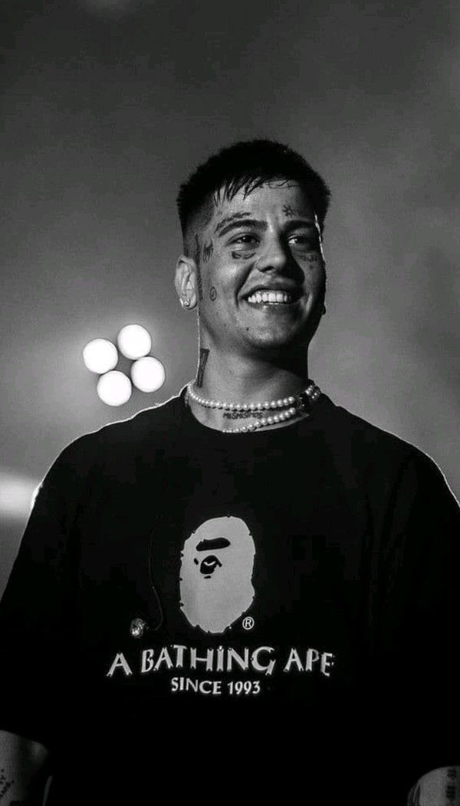
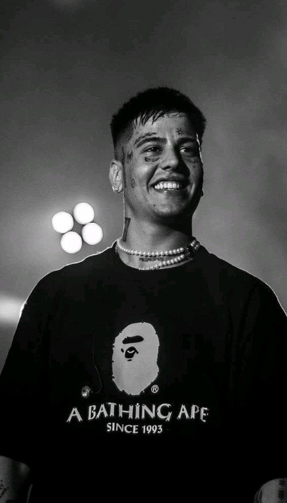

Duki, cuyo nombre real es Mauro Ezequiel Lombardo, es un reconocido rapero y cantante argentino. Nació el 24 de junio de 1996 en Buenos Aires, Argentina. Duki saltó a la fama en la escena musical argentina a través de su participación en la famosa competencia de freestyle "El Quinto Escalón" en 2015, donde demostró su talento para el rap improvisado y llamó la atención del público. Después de su participación en "El Quinto Escalón", Duki comenzó a ganar popularidad en las redes sociales, especialmente en YouTube y SoundCloud, donde compartió sus canciones y freestyles. Su estilo fresco y su habilidad lírica resonaron con el público joven, y rápidamente se convirtió en un fenómeno viral en Argentina y en otros países de habla hispana. En 2017, Duki lanzó su canción "No Vendo Trap" junto con su video musical, que rápidamente acumuló millones de visitas en YouTube. La canción se convirtió en un himno del género del trap en Argentina y catapultó la carrera de Duki al siguiente nivel. Desde entonces, ha lanzado varios sencillos exitosos, incluyendo "She Don't Give a FO", "Loca" y "Goteo", que han acumulado cientos de millones de reproducciones en plataformas digitales. Duki también ha colaborado con otros artistas prominentes, como Paulo Londra, Khea y Cazzu, entre otros. Su estilo musical se caracteriza por su fluidez y su capacidad para combinar ritmos pegadizos con letras ingeniosas y a veces provocativas. Ha sido elogiado por su versatilidad artística y su capacidad para adaptarse a diferentes estilos musicales. Además de su éxito en la música, Duki también ha incursionado en el mundo de la moda y el diseño. Ha lanzado su propia línea de ropa llamada "Modo Duki" y ha colaborado con marcas reconocidas en Argentina. Duki ha recibido numerosos premios y reconocimientos a lo largo de su carrera, incluyendo varios premios Gardel, que son los premios más importantes de la música en Argentina. Su música y su impacto en la cultura urbana argentina lo han convertido en uno de los artistas más influyentes y exitosos de su generación. Así es como Duki ha logrado construir una carrera sólida en la industria musical, convirtiéndose en una figura destacada del rap y el trap argentino. Su historia es un ejemplo de cómo el talento y la perseverancia pueden llevar a un artista a alcanzar el éxito en la industria de la música.
HISTORIA
 
